Kora, Shiga: things to do, food and stays
Kora · Shiga
Kora
Highlighted on the Shiga map.
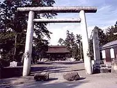
Stay
甲良町貸別荘 ＾
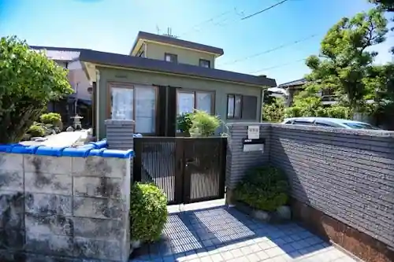
Kora Machi Kashibesso ^
Inn in Shimonogo, Kora with ski access.
Dining
ローズマリー
Rozumari
ピッツェリア ウノ
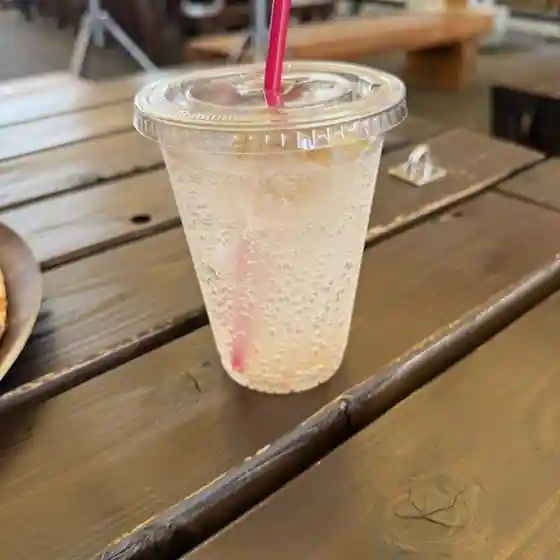
Pizzeria Uno
ひふみ食堂
Hifumi Shokudo
クレープス 道の駅 せせらぎの里こうら店
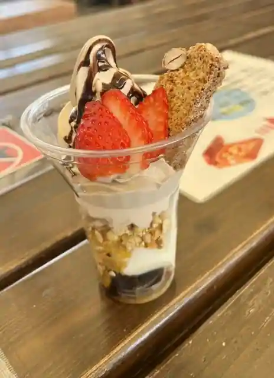
Kurepusu Michi No Eki Seseragino Sato Kora
幸楽食堂
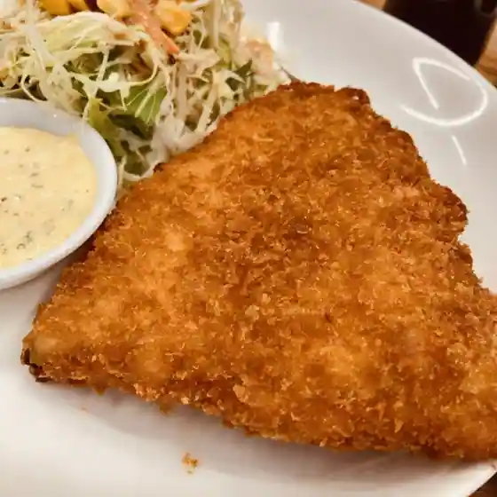
Koraku Shokudo
おだいどこ 野幸
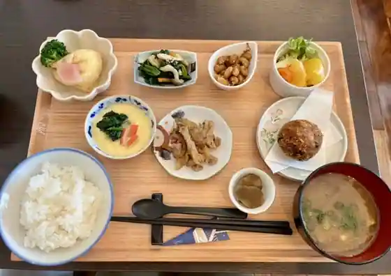
Odaidoko No Sachi
久光精肉店
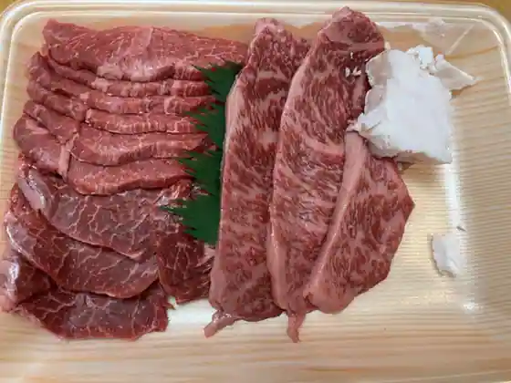
Hisamitsu Seiniku
ゆずのだいどこ
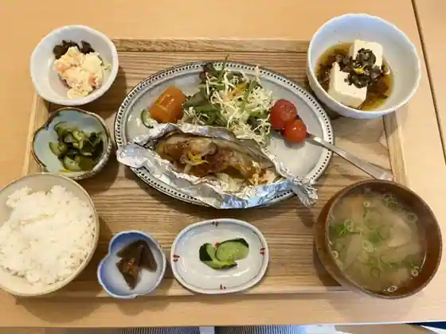
Yuzunodaidoko
れすとらん千成亭
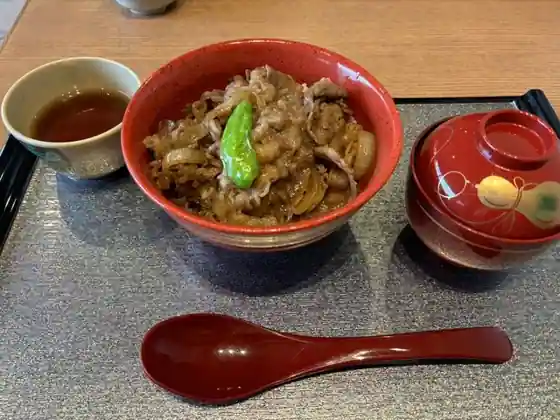
Restaurant Sennari Tei
Sights
Kora Shrine (Kora Amako)
Ogawara Shrine
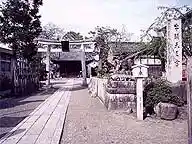
Hachiman Shrine (Kora)
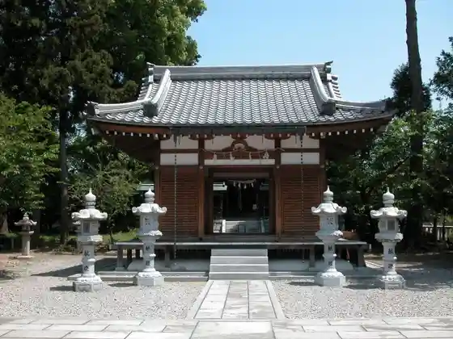
Shoraku Tera
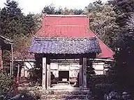
Koto Miyama Saimyo Tera (Ike Tera)
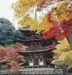
Kora Ritsu Library (Manabi Sha)
Omitetsudo Amako Eki
Kora Town Hall